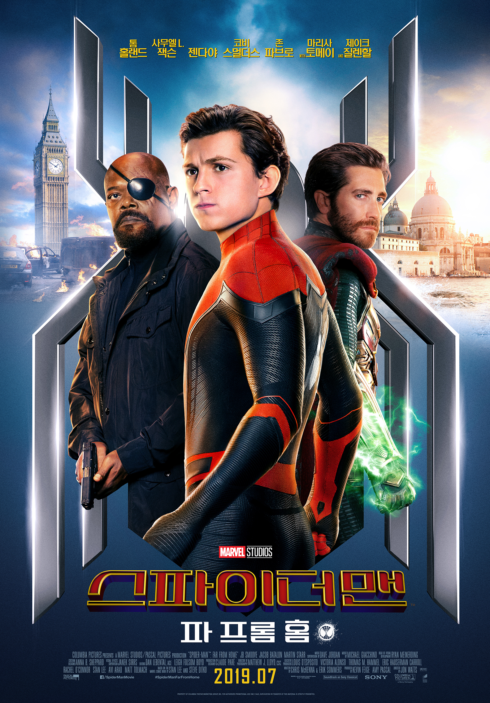
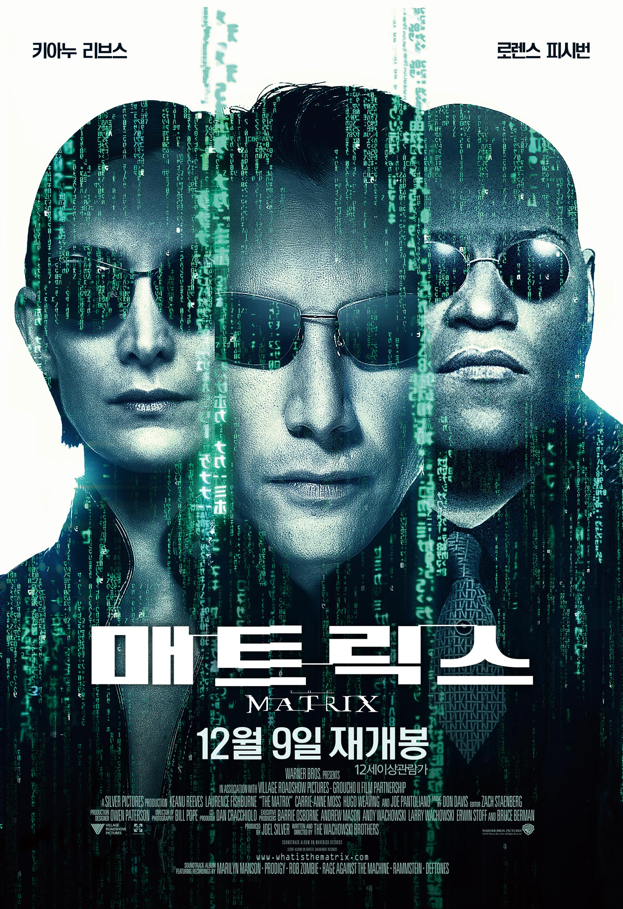

| 1 |
스파이더맨 노 웨이 홈 |
 |
‘엔드게임’ 이후 변화된 세상, 스파이더맨 ‘피터 파커’는 학교 친구들과 유럽 여행을 떠나게 된다. 그런 그의
앞에 ‘닉 퓨리’가 등장해 도움을 요청하고 정체불명의 조력자 ‘미스테리오’까지 합류하게 되면서 전 세계를
위협하는 새로운 빌런 ‘엘리멘탈 크리쳐스’와 맞서야만 하는 상황에 놓이게 되는데…
|
클릭 |
| 2 |
어벤져스 엔드게임 |
 |
인피니티 워 이후 절반만 살아남은 지구 마지막 희망이 된 어벤져스 먼저 떠난 그들을 위해 모든 것을 걸었다!
위대한 어벤져스 운명을 바꿀 최후의 전쟁이 펼쳐진다!
|
클릭 |
| 3 |
매트릭스 |
 |
서기 2199년, 인공지능 AI에 의해 인류가 재배되고 있다! 인간의 기억마저 AI에 의해 입력되고 삭제 되는
세상.진짜보다 더 진짜 같은 가상 현실 ‘매트릭스’ 그 속에서 진정한 현실을 인식할 수 없게 재배되는 인간들.
그 ‘매트릭스’를 빠져 나오면서 AI에게 가장 위험한 인물이 된 '모피어스’는 자신과 함께 인류를 구할 마지막
영웅 ‘그’를 찾아 헤맨다. 마침내 ‘모피어스’는 낮에는 평범한 회사원으로, 밤에는 해커로 활동하는 청년
‘네오’를 ‘그’로 지목하는데… 꿈에서 깨어난 자들, 이제 그들이 만드는 새로운 세상이 열린다!
|
클릭 |
| 4 |
신세계 |
 |
"너, 나하고 일 하나 같이 하자" 경찰청 수사 기획과 강과장(최민식)은 국내 최대 범죄 조직인 '골드문'이
기업형 조직으로 그 세력이 점점 확장되자 신입경찰 이자성(이정재)에게 잠입 수사를 명한다. 그리고 8년,
자성은 골드문의 2인자이자 그룹 실세인 정청(황정민)의 오른팔이 되기에 이른다.
|
클릭 |
| 5 |
업 |
 |
한방울 눈물과 한바탕 웃음! 마음 속에 담고 싶은 단 하나의 걸작 평생 모험을 꿈꿔 왔던 ‘칼’ 할아버지는 수천
개의 풍선을 매달아 집을 통째로 남아메리카로 날려 버리는데, ‘칼’ 할아버지의 이 위대한 모험에 초대 받지
않은 불청객이 있었으니, 바로 황야의 탐험가 ‘러셀’! 지구상에 둘도 없을 이 어색한 커플이 함께 하는 대모험.
그들은 과연 남미의 잃어버린 세계에서 사라져 버린 꿈과 희망, 행복을 다시 찾을 수 있을까?
|
클릭 |